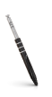
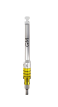
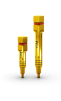
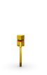
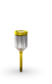
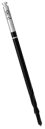
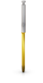
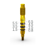

Brocas Helix GM® Long
:: Disponível em aço cirúrgico;
:: Sequência de instrumentação do alvéolo cirúrgico para implantes Helix GM® Long
41 mm
Lança
103.453
Ø 2,35
103.462
Ø 3,75
103.463
Ø 4,0
103.464

Conexão GM para Contra-ângulo
:: Para capturar o implante diretamente na embalagem;
:: Conexão com pinça em titânio para captura, transporte e instalação mais seguros;
:: Para instalação dos implantes GM com Contra-ângulo, ou acoplado à Chave Digital para conexões de Contra-ângulo (104.028) para a instalação manual;
:: Com seis marcações, indicando a posição da face do indexador hexagonal;
:: As marcações a laser indicam a profundidade de instalação do implante: nível ósseo, 1 e 2 mm infraósseo e última marca (3 mm) espaço biológico;
:: Torque máximo 35 N.cm
105.131

Brocas Helix GM® Long para Guided Surgery
:: Disponível em aço cirúrgico;
:: Sequência de instrumentação do alvéolo cirúrgico para implantes Helix GM® Long no procedimento de cirurgia guiada
50 mm
Ø 2,35
103.459
Ø 3,75
103.460
Ø 4,0
103.461
Conexão GM para Catraca
:: Para instalação dos implantes GM com a Chave Catraca Torquímetro (104.050);
:: Com seis marcações, indicando a posição da face do indexador hexagonal;
:: As marcações a laser indicam a profundidade de instalação do implante, nível ósseo, 1 e 2 mm infraósseo e última marca (3 mm) espaço biológico;
:: Torque máximo 60 N.cm
Curta
22 mm
105.129
Longa
30 mm
105.130
Extra -longa
45 mm
105.156

Brocas Zygoma GM™
:: Disponível em aço cirúrgico;
:: Sequência de instrumentação do alvéolo cirúrgico para implantes Zygoma GM™.
71 mm
Ø 2,35
103.455
Piloto Ø 2,3/3,2
103.465
Ø 3,75
103.456
Ø 4,0
103.457
Conexão Torque Neo para Catraca
:: Disponível em aço cirúrgico;
:: Com novo encaixe Neo, único para todos os parafusos, oferecendo resistência e facilidade;
:: Coloração amarela para identificação da linha
Curta
16,5 mm
105.133
Média
22 mm
105.132
Longa
32 mm
105.157

Broca Multilaminada para Zygoma GM™
:: Disponível em aço cirúrgico;
:: Ponta esférica e com pino guia e lâminas helicoidais para preparo da cavidade e instalação do implante pela técnica exteriorizada
50 mm
Ø 4,0
103.458
Chave Digital Neo
:: Disponível em aço cirúrgico;
:: Com novo encaixe Neo, único para todos os parafusos, oferecendo resistência e facilidade;
:: Coloração amarela para identificação da linha
Curta
21 mm
104.058
Média
25 mm
104.060
Longa
37 mm
104.070

Broca Zygoma GM™ para Guided Surgery
:: Disponível em aço cirúrgico;
:: Após perfuração da primeira broca, o guia cirúrgico deve ser removido e a sequência das brocas passa a ser convencional
57 mm
Ø 2,35
103.454

Conexão Torque Neo para Contra-ângulo
:: Disponível em aço cirúrgico;
:: Com encaixe Neo, único para todos os parafusos, oferecendo resistência e facilidade;
:: Coloração amarela para identificação da linha
Extra Curta
16,5 mm
105.146
Curta
24 mm
105.135
Longa
31 mm
105.160
Extra longa
37,7 mm
105.167

Medidor de Altura GM
:: Disponível em titânio;
:: Para a seleção de intermediários;
:: Marcações correspondentes às alturas de transmucoso;
:: Pode ser usado como posicionador radiográfico.
128.028
